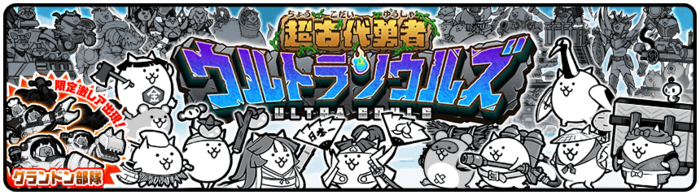
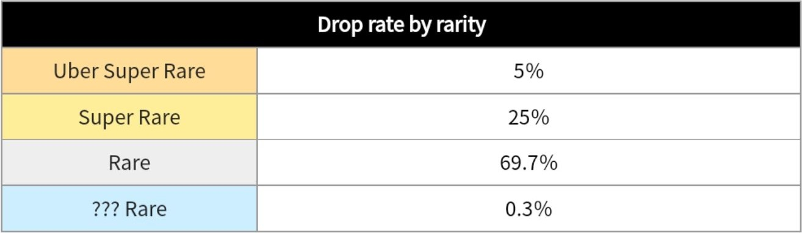
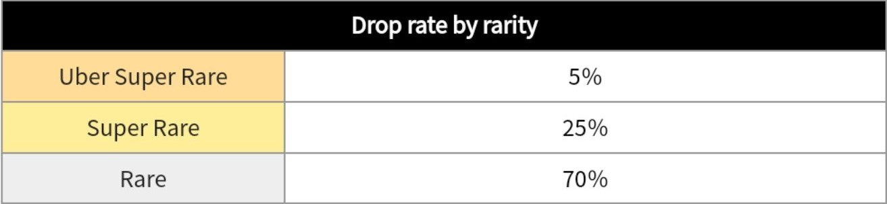
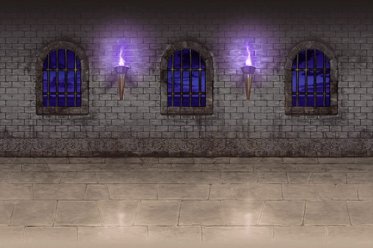

The Gacha system in Battle Cats is really generous and gives you the chance to obtain really
powerful and useful cats that you’ll more than likely need later on in the game. There is also a
rotation of banners (sets of cats) that guarantees you don’t have to wait for
weeks if you don’t want to roll on the current banner or if you're looking to get a specific unit.
Just like Non-Gacha cats, Gacha cats also have special abilities and advantages over certain types of enemies.
There are even banners filled with cats that all have an advantage over a specific type. For example, the Ultra
Souls banner has cats that are all great against Angel enemies (more of this in the BC Wiki).

The Gacha system expands on the different types of cats. Non-Gacha cats could only be either
Normal or Special, but Gacha cats can be 1 of 4 types. They can either be Rare, Super Rare,
Uber Rare, or Legend Rare. Rares are the weakest Gacha cats but they can still prove useful
during specific situations. Super Rares are more powerful Rares, essentially, but some of them
do make the difference between a stage being difficult and it being a piece of cake. Uber
Rares are when things get serious since most of them have really amazing abilities and stats to
the point that they can clear stages alone. Legend Rares, which were only added recently when
taking into account how long the game’s been out, are the most powerful units in the game with
various uses. The chances of getting each rarity are indicated in the picture on the left.


